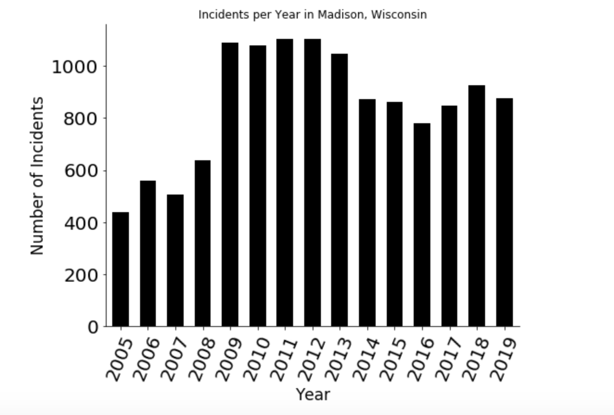

Before Peer Review

The objective of this plot is to let the viewer see the number of incidents that have been reported to the Madison Police Department in the years 2005 to 2019. Madison has seen an increase in incidents reported with the increase in 2008-2009 nearly two-fold. This graph is more of a foundation for other examinations of the operations of the Madison PD as we can use this to focus on certain years of interest.
Comments
Hunter Gage:
I'm not sure if the figure title is necessary; this is usually something that would go in the figure legend. If you do use a figure title, I would suggest increasing the font size so that it is at least as big as your axes titles.
- The word "incidents" was slightly confusing to me at first. Maybe specify "incidence reports".
- Nice job properly labelling all of your axes. I like the use of angled text for your x-tick labels. The plot looks professional and easy to read.
- I think the phrase "Madison has seen an increase in incidents supported" is slightly misleading, since the number of incidence has leveled off or slightly decreased since 2012 (this might be something interesting to investigate!). I think it would also be interesting to focus on what happened between 2008 and 2009 in future plots.
- As another suggestion, have you considered making this a stacked bar plot, if your data breaks down "incidents" into specific categories? Then you might be able to attribute the change between 2008-2009 and 2012-2013 to a certain type of crime?
Marit McQuaig:
My suggestions/questions aren't necessarily for this visualization, but more geared towards others that you could create to further explore this dataset.
- 1) What constitutes an "incident" and what is the breakdown of different types of incidents? Is the increase from 2008-2009 due to one type of incident or did reports of all incidents rise equally?
- 2) Did the number of "incidents" increase, or did they just become more likely to be reported when they occurred?
- 3) Who are the perpetrators? Are they of a specific age group?
- 4) Likewise, where are the incidents occurring? Are certain areas of Madison more likely to report incidents than others? Are certain areas becoming more "dangerous" than others or has the incident rate increased the same across neighborhoods?
- 5) I know that Madison is a growing city -- how does this increase in incidents look when you control for population growth (e.g. incidents per capita)?
- 6) What other factors could have caused this? Was there a change to laws, what constitutes an "incident" or how incidents were reported? Was there major population growth?
- 7) Could the recession in 2008 have sparked this? I would be curious to see if these numbers line up at all with economic indicators (such as the unemployment rate), since the rates begin to drop again after 2012.